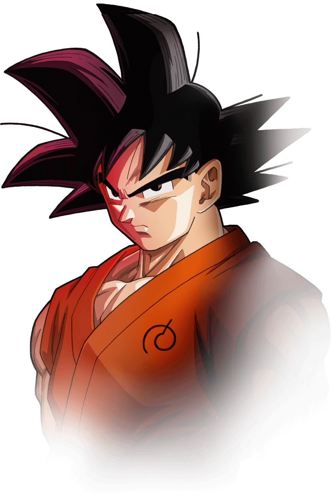
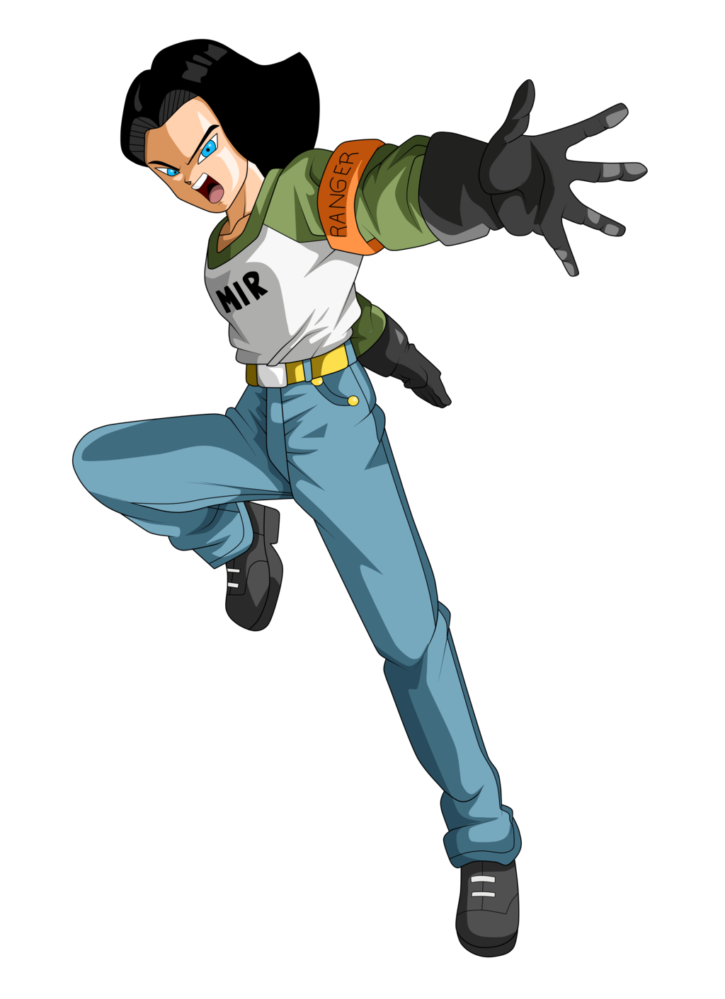
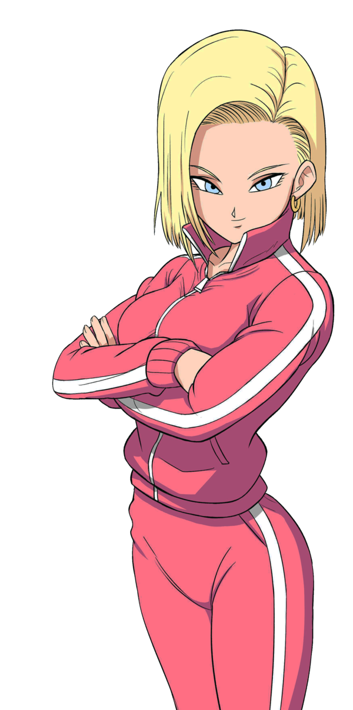
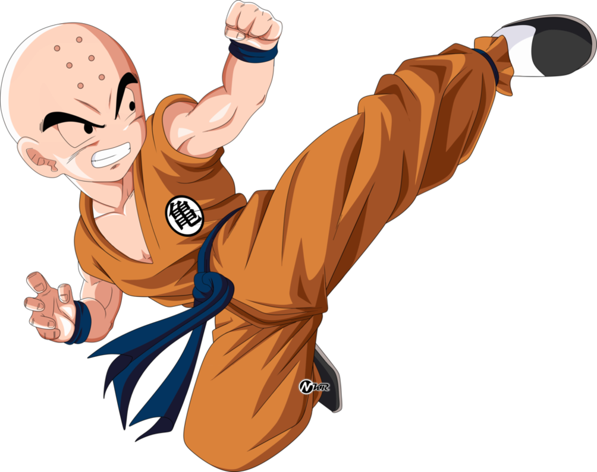
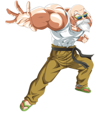
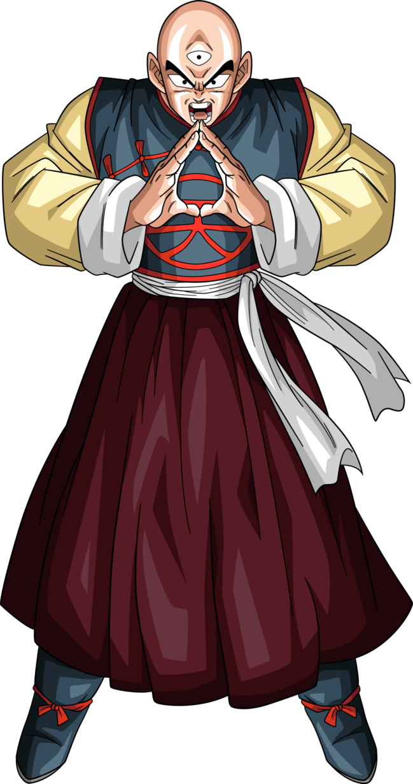
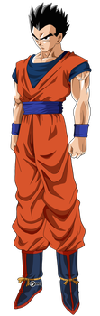
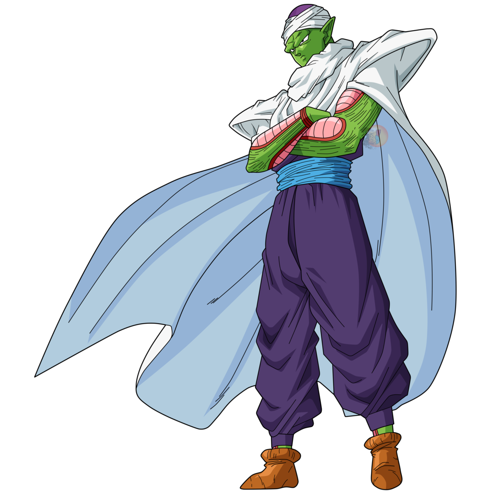
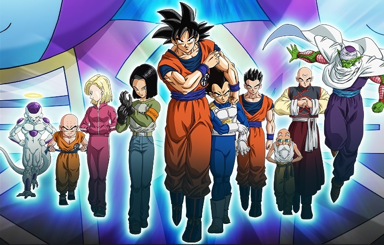
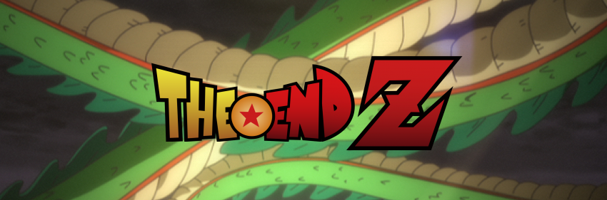

Personajes Principales:


Goku
¡Goku, el héroe de Dragon Ball Z, es el guerrero más poderoso de la tierra! Pero ese título podría rivalizarse con el regreso de Freezer, el villano definitivo. El nivel de poder de Freezer es infinitamente más alto de lo que era cuando se enfrentaron por última vez. ¿Podrá Goku finalmente poner al Emperador del mal a descansar?
Vegeta
Vegeta es el poderoso Príncipe Saiyajin del Planeta Vegeta. Alguna vez un guerrero brutal y malvado, ha venido a obtener un corazón justo a través de sus batallas con Goku. Vegeta entrena día y noche en un esfuerzo por volverse más poderoso que su aliado Saiyan. Ahora que el señor supremo que destruyó su planeta natal ha regresado, ¿puede Vegeta poner su rivalidad con Goku a un lado para ayudar a proteger el planeta Tierra?


Freezer
Freezer pasó más de una década en el infierno después de su muerte. Ahora, con la ayuda de su leal secuaz, ha sido devuelto a la vida por el poder de las Dragon Balls. Con una nueva forma y el apoyo de un ejército de mil soldados, Frieza es más fuerte que nunca, ¡y no descansará hasta que destruya a Goku!
N°17
El Androide Número 17 hace su regreso en Dragon Ball Super, donde cambiaría su carácter, tras volver a la vida gracias a las Esferas del Dragón, trabaja como guardabosques y entrena en secreto para poder cumplir su misión de proteger la Isla Monstruo, preservando la vida silvestre, en especial del legendario Minotauro contra los cazadores furtivos.


N°18
Androide Número 18, la hermana gemela del Androide Número 17 se une a los Guerreros a participar en el Torneo de Poder.
krilin
Krilin es uno de los principales Guerreros Z, y el mejor amigo de Son Goku. Luego de retirarse de las artes marciales, optando por formar una familia, como el esposo de la Androide Número 18 y el padre de Marron. Vuelve a la Lucha dejando todas sus inseguridades atras ¿Podrá Conseguirlo y potenciar su espíritu de lucha?


Ms Roshi
El Maestro Roshi fue en su momento el Terrícola más fuerte de la Tierra, y mucha gente lo recuerda como el 'Dios de las Artes Marciales', pero ahora tiene una lucha mucho mas dificil ¡Universal!
Tenshin
El luchador de artes marciales descendiente de un largo entrenamiento mental. Es considerado uno de los individuos más poderosos provenientes de la Tierra dentro del universo de Dragon Ball.


Gohan
Tras reanudar su entrenamiento con Piccolo,y retoma aura divina, como lo tenía a inicios de la serie.¡A Ganar!
Piccolo
Piccolo demuestra ser análitico y estratégico en la batalla. Aprende rápido de sus errores y utiliza bien todos los recursos a su disposición, con el tiempo, se vuelve cada vez más sabio. Mantiene aún su actitud de lobo solitario similar al Androide 17, y solo se abre con muy pocos personajes.


